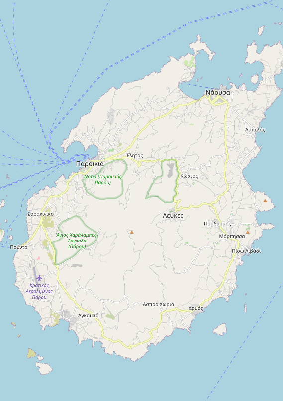

📍 Coloca los pins — Paros
1. Haz clic en el mapa para colocar un pin
2. Rellena el nombre y color
3. Haz clic en
Añadir pin
4. Cuando termines, pulsa
Copiar JSON
y pásame el resultado
← Haz clic en el mapa para seleccionar posición
Nombre del pin
Color
Azul (visita / puerto)
Rojo (hotel / especial)
Amarillo (barrio / playa)
Añadir pin
Pins colocados
📋 Copiar JSON para el librillo